Magyar Szakember KeresőVillanyszerelő, vízvezeték-szerelő, festő, magántanár – a MASZEK egy helyre hozza a megbízható magyar szakembereket és mindazokat, akiknek épp szükségük van rájuk.
Megbízható szakembert keresel? Találd meg egyszerűen, gyorsan és biztonságosan! Böngéssz a különböző területek szakemberei között, hasonlítsd össze a lehetőségeket, és találd meg azt, aki a legjobban illik az igényeidhez.
"Gyorsan kiérkezett, tiszta munkát végzett és pontosan annyit kért, amennyiben megegyeztünk!"
Válassz a legnépszerűbb szakterületek közül és találj megfelelő mestert a feladatra.
Konnektorok cseréjétől a teljes lakás hálózatkiépítéséig, hibaelhárítás és világítástechnika.
Csőtörések elhárítása, csaptelepek cseréje, lefolyótisztítás és komplett fürdőszoba felújítás.
Beltéri és kültéri festés, gipszkartonozás, tapétázás tiszta és precíz kivitelezéssel.
Minden funkciót úgy terveztünk, hogy a folyamat gyors és biztonságos legyen.
Rögzítsétek a megbeszélt időpontot, a feladat részleteit és a várható költségeket egyetlen átlátható felületen.
Előre rögzített árajánlatok, elkerülve a munka közbeni kellemetlen meglepetéseket.
Kizárólag olyan megrendelők értékelhetnek, akiknél a szaki valóban elvégezte a munkát.
A szakemberek azonosítóit és vállalkozói adatait előzetesen átvizsgáljuk.
A MASZEK garanciát jelent a gyors és megbízható ügyintézésre mindkét fél számára.
Válaszd ki a szakmát, add meg a várost és találd meg a számodra szimpatikus mestert.
Beszéld át a munka részleteit, rögzítsétek a foglalást, állapodjatok meg az árban és kezdődhet is a munka.
A munka elvégzését követően értékeld a szakembert és segítsd a közösséget.
Hozd létre a szakmai profilodat, add meg a szakterületedet és a vállalási körzetedet.
Vedd fel a kapcsolatot a megrendelőkkel, egyeztesd a feladat helyszínét és végezd el a munkát.
Gyűjtsd a jó értékeléseket minden sikeres munka után, és szerezz folyamatosan új ügyfeleket.
Próbáld ki, körülbelül milyen munkadíjra számíthatsz!
A MASZEK küldetése,hogy modern, átlátható és megbízható platformot biztosítson a hazai szakemberek és lakossági megrendelők számára. Elkötelezettek vagyunk a minőségi munkavégzés és a tiszta kommunikáció mellett.
Egy helyre hozzuk a magyar szakembereket, mestereket, magántanárokat és induló kisvállalkozásokat. Néhány kattintással megtalálhatod a számodra megfelelőt – akár térképen is –, a munkakérelem, az ajánlatadás és a foglalás pedig könnyen és problémamentesen zajlik.
Földrajzi helyzet alapján találd meg a megyédben vagy a környékeden dolgozó specialistákat.
Nem csak csillagok: a korábbi megrendelők részletes véleményét is elolvashatod.
Burkolók, villanyszerelők és kőművesek mellett magántanárok, kisebb vállalkozások is helyet kapnak.
Nem a helyszínen kell a fizetéssel bajlódni, az könnyedén a weboldalon is megtörténhet.
Az elvállalt munkák egy átlátható felületen, naptárban rendszerezhetők.
Egy admin felület köti össze a két oldalt, és az egész platform biztonságát kezeli.